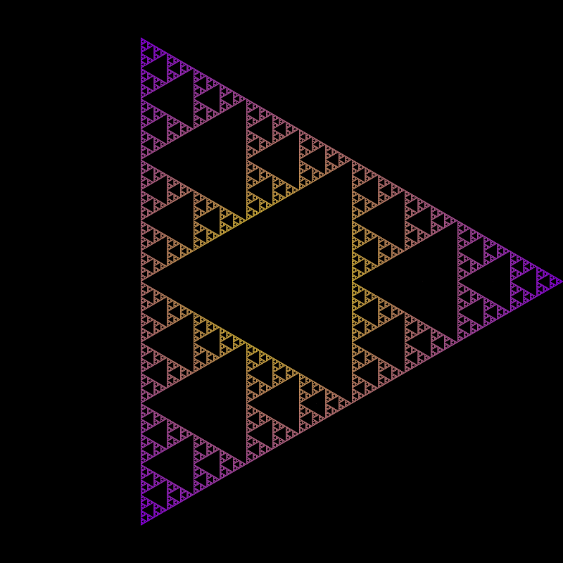
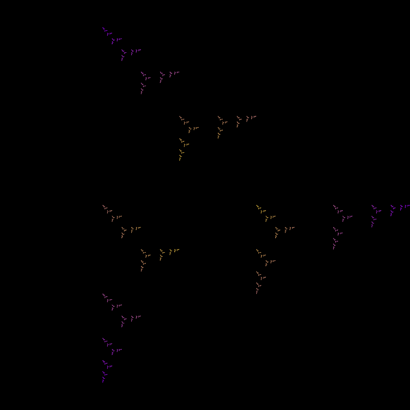
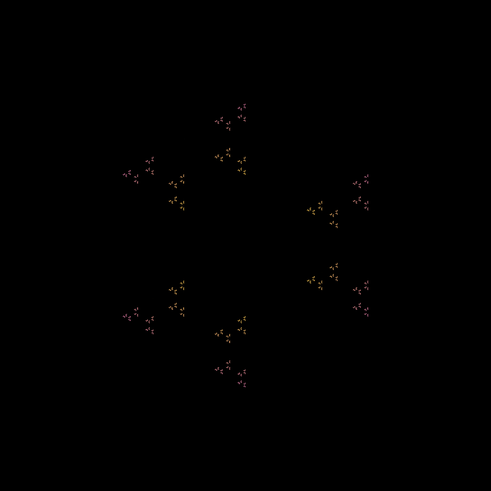
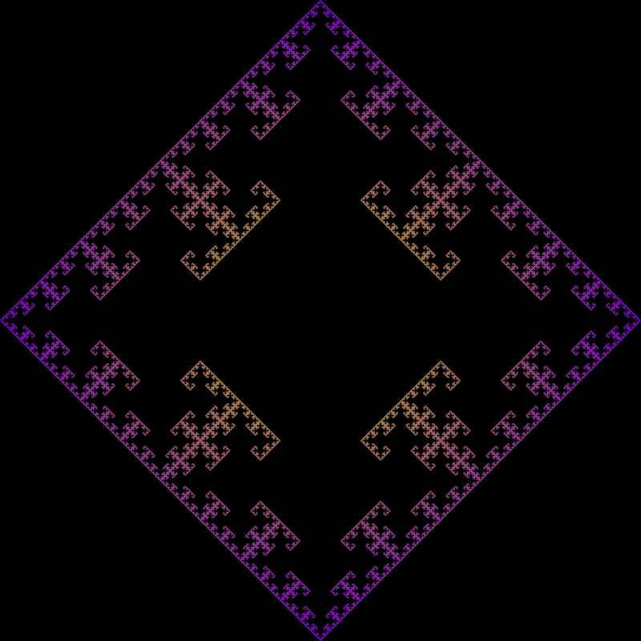
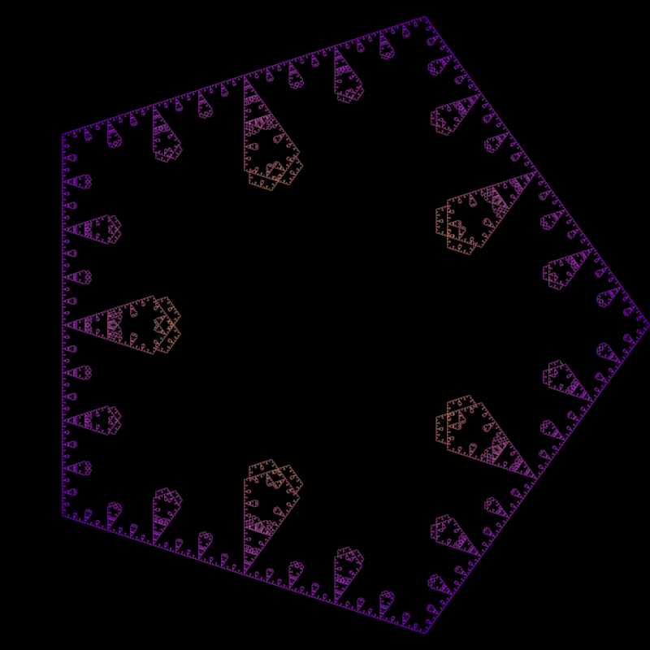
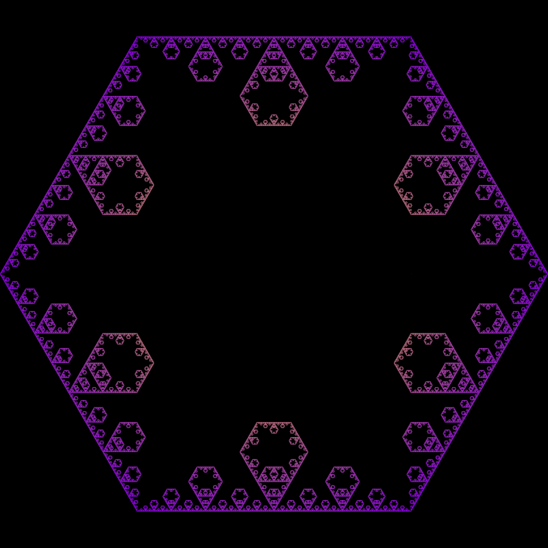
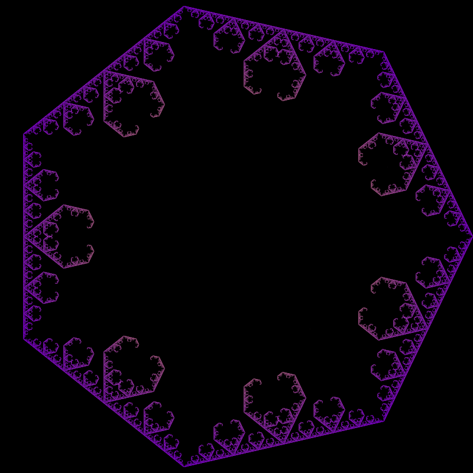
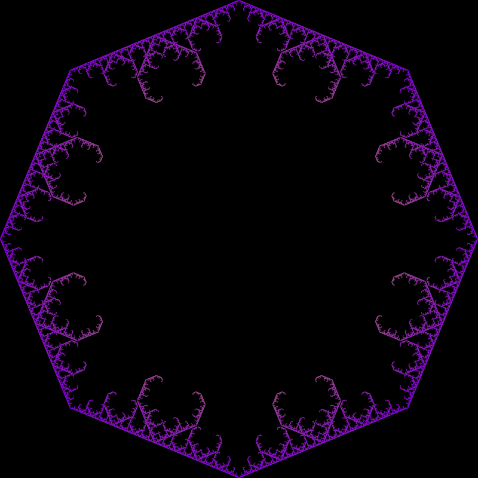
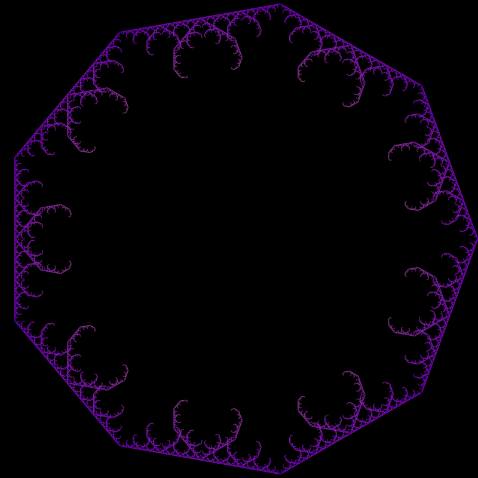
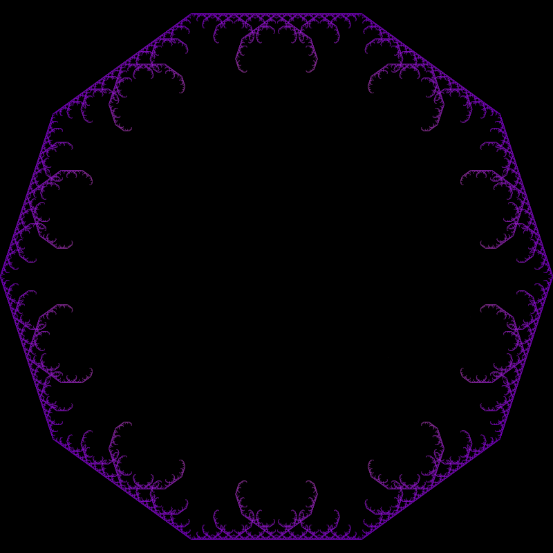

Wikipedia has a perfectly reasonable explanation of the chaos game, so we won't re-explain it. What we will explore are some particularly nice examples of some restrictions and how we can think about some sort of continuity between different instances of the chaos game.
We establish the following notation. Let \(V = \{ v_0, \ldots, v_{k - 1} \} \) be some set of points in \( \mathbb{R}^n \). For the time being, we will take \( n = 2 \) and \( v_i = (\cos(2\pi / k), \sin(2\pi / k)) \), with \( k > 2 \). Let \( R \) be a subset of \( \{0, \ldots, k - 1 \}\). Then we will say that \(C(V, R)\) is the restricted chaos game run on the polygon whose vertices are \(V\) and with the following restriction. If at any given step in the chaos game we had just chosen vertex \(v_i\) to jump towards, the next vertex we choose to jump towards must be \(v_{i + r}\) for some \(r \in R\), where we take addition to be modulo \(k\).
Below are the three non-trivial unique (up to symmetries) chaos games for \(k = 3\).
 \(R = \{0, 1, 2\}\) |
 \(R = \{0, 1\}\) |
 \(R = \{1, 2\}\) |
Note that there is no significance of the yellow and purple. It's just a nice color gradient.
If you'd like to play around with various restrictions and different values for \(k\), you can check out an interactive demo here.
Let \(R = \{0, 1, k - 1\}\). What then happens, if we look at \(C(V, R)\) for various \(k\)?
\(k = 3\) |
 \(k = 4\) |
 \(k = 5\) |
 \(k = 6\) |
 \(k = 7\) |
 \(k = 8\) |
 \(k = 9\) |
 \(k = 10\) |
We notice that for larger values of \(k\), the resulting fractals are remarkably similar.
Here is a demonstration of an idea that I will write up at some point: Link.